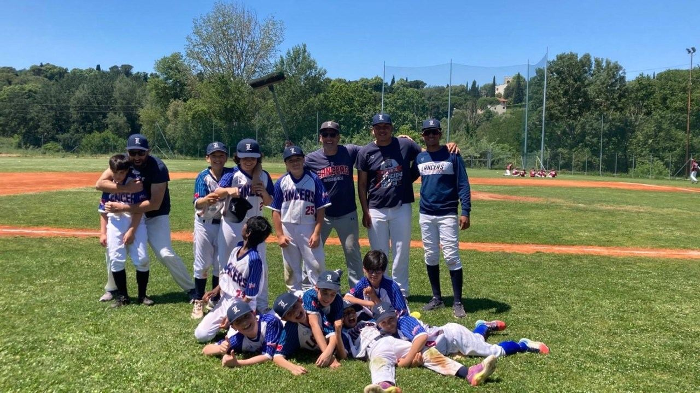
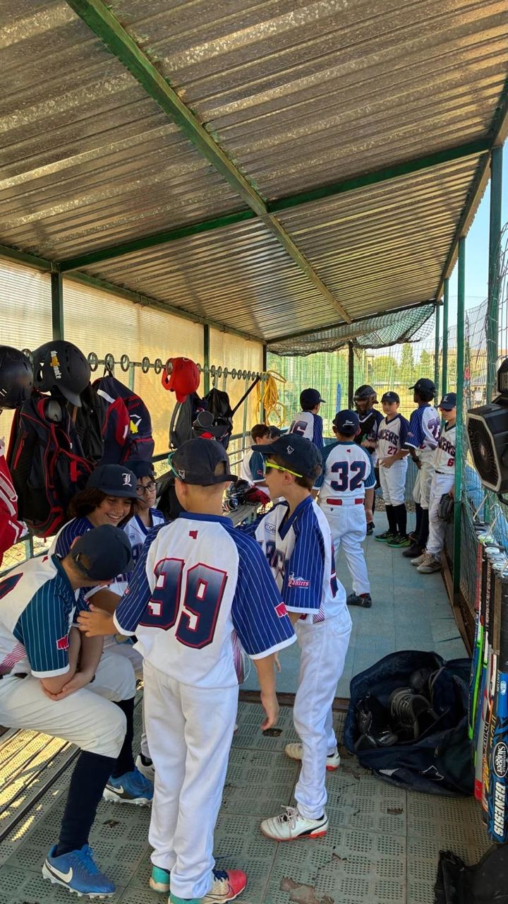

Si è concluso il campionato Under 12 dei Lancers, terminato il 21 giugno con una bella vittoria contro il DRK, che ha messo il sigillo su una stagione ricca di soddisfazioni.

Il percorso era iniziato a gennaio con il torneo indoor Winter League, concluso con un sorprendente secondo posto alle spalle del Padule. Un risultato che lasciava già intravedere il grande lavoro svolto dal manager e da tutto lo staff tecnico.
Il destino ha voluto che il campionato prendesse il via proprio il 15 marzo con la sfida casalinga contro il Padule. Nel girone d’andata i ragazzi hanno disputato sei partite, conquistando cinque vittorie, un risultato poi replicato nel girone di ritorno, iniziato il 9 maggio proprio sul campo del Padule. Un cammino straordinario che ha portato la squadra a conquistare un meritatissimo secondo posto finale.
Al di là dei risultati, ciò che rende più orgogliosi allenatori e società è stato l’atteggiamento dimostrato dai ragazzi durante tutta la stagione: impegno, rispetto, sportività e tanta voglia di stare insieme. È stato bello vedere nascere amicizie non solo all’interno della squadra, ma anche con gli avversari incontrati durante il campionato, a conferma dei valori che il baseball sa trasmettere.
Terminato il campionato, il gruppo ha partecipato a Milano al torneo “80 Voglia di Baseball”, dove ha avuto l’opportunità di affrontare Milano, Lodi e una selezione di giocatori del Piemonte.
È stata un’esperienza speciale, resa ancora più significativa dalla presenza in squadra di alcuni ragazzi milanesi, aggregati per l’occasione. Un’opportunità importante non solo dal punto di vista sportivo, ma soprattutto umano: confrontarsi con realtà diverse, creare nuove amicizie e rafforzare ulteriormente lo spirito di gruppo. I ragazzi si sono integrati fin da subito con i nostri atleti, che li hanno accolti con entusiasmo, dando vita a un gruppo unito e a bellissime amicizie che resteranno nel tempo.
Dopo il torneo, gli allenamenti sono proseguiti fino al 16 luglio, giorno dell’ultima seduta prima della pausa estiva. L’attività riprenderà nell’ultima settimana di agosto per preparare al meglio i prossimi importanti appuntamenti:

⚾ Finali Nazionali (settembre), contro le prime classificate delle altre regioni.
⚾ Tuscany League (settembre).
⚾ Torneo di Bologna (ottobre).
Un saluto ai ragazzi che passano in Under 15
Al termine di questa stagione sportiva saluteremo alcuni ragazzi che concludono il loro percorso nell’Under 12 e si preparano a vivere una nuova avventura in Under 15:
- Guido Rosi
- Mattia Moretti
- Manuele Daidone
- Sai Barbara
- Liam Colonia
A loro va il ringraziamento di tutta la famiglia Lancers per l’impegno, la crescita e i tanti momenti condivisi in questi anni. Siamo certi che porteranno entusiasmo, passione e spirito di squadra anche nella nuova categoria.
Da parte di tutti i compagni, degli allenatori e della società, un grandissimo in bocca al lupo per questa nuova sfida. I colori dei Lancers continueranno ad accompagnarvi anche nel vostro percorso in Under 15.
Forza Lancers! ⚾💙